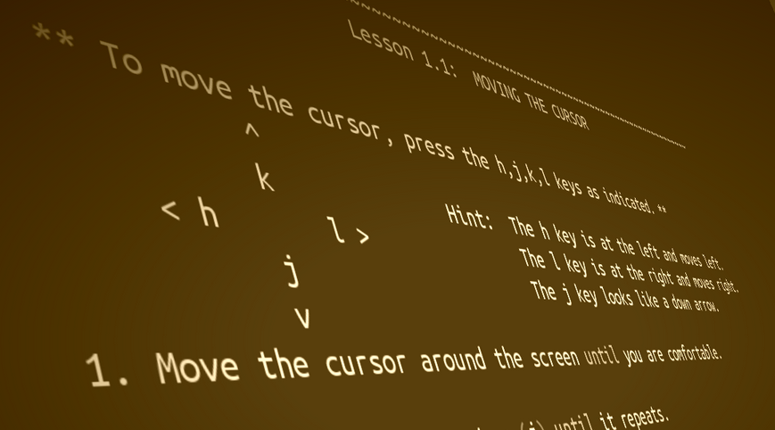

How to be productive in vim in 30 minutes

I had heard a lot of people say vim is very hard to learn, and got the impression that it will take a great investment to switch to using it.
While I have came to understand that they are right in that there is a lot of things to invest in to get really great at using vim, that will really pay back, I have also found out one thing that I see almost no-one mentioning:
You can be as productive in vim as in a normal text-editor, in 30 minutes.
So what’s the secret sauce behind this? What will I sell you to make this happen? Nothing! The answer is shipped with vim, and if you have vim installed on a unix-like system, then follow these steps, and you’re done:
- Open up a terminal
- Type
vimtutor - Press enter
- Follow the tutorial carefully to the end
- Try to remember at least the 10-15 first commands
- Type
:q<Enter>to quit - Done!
vimtutor, the secret sauce in all of this, is an interactive commandline tutorial, that will guide you through the ~15-20 commands that you need to be productive in vim, and let you practice them a few times. I personally found I was good with remembering the 10-15 first of these. But the best part: You will be done with the guide in a mere 30 minutes or so. And what is also nice, is that if you actually practiced the commands while going through it, you will actually be able to remember some 10-15 commands, even after 30 minutes.
I find that vimtutor is so effective, that I can’t understand why it is not more well-known. E.g. I myself found out about it years after my first failed attempts to learn vim.
- Then, whenever you want to go further, I haven’t found a better resource than Practical Vim , from the pragmatic programmer bookshelf.
- EDIT: I also got a comment from a friend who found Vim Adventures very effective.*